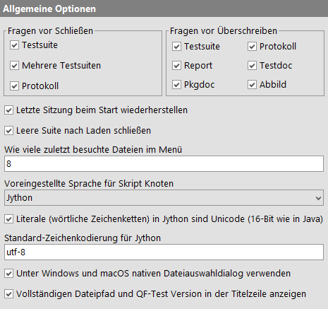
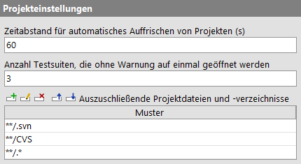
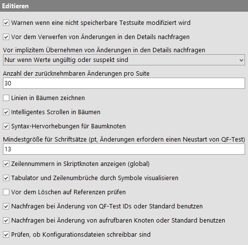
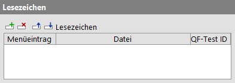
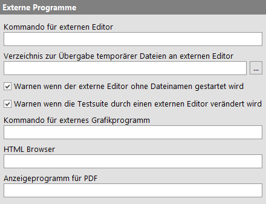
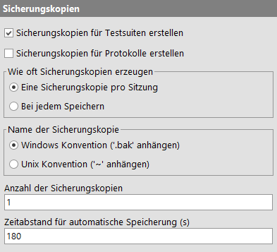
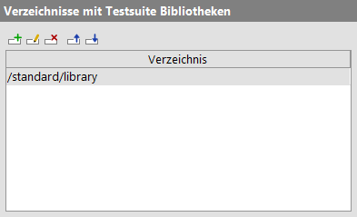
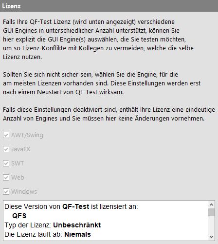
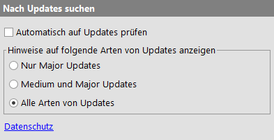

| Version 6.0.3 |
Dieser Ast ist für allgemeine QF-Test Einstellungen zuständig.
|
|  | ||
|
| Abbildung 37.2: Allgemeine Optionen | ||
Wurde eine Testsuite oder ein Protokoll modifiziert, wird vor dem Schließen eines Fensters oder dem Beenden von QF-Test normalerweise gefragt, ob die Daten gespeichert werden sollen. Diese Abfrage kann durch Ausschalten dieser Optionen, getrennt für Testsuiten und Protokolle, verhindert werden, was gefährlich ist, da die Änderungen dann einfach verworfen werden.
Wenn Sie eine Testsuite oder ein Protokoll abspeichern oder einen Report, Testdoc oder Pkgdoc Dokumentation generieren oder ein Abbild eines 'Check Abbild' abspeichern und die Zieldatei bzw. das Verzeichnis bereits existiert, wird normalerweise rückgefragt, ob Sie die Datei überschreiben wollen. Durch ausschalten der entsprechenden Optionen können Sie diese Frage für jeden Dateityp getrennt unterbinden.
Ist diese Option gesetzt und wird QF-Test in der Workbench-Ansicht geöffnet, wird die letzte Sitzung wieder hergestellt indem die zuletzt geöffneten Testsuiten geladen werden und der zuletzt selektierte Knoten in der jeweiligen Suite selektiert wird. Sind ein oder mehrere Testsuiten auf der Kommandozeile angegeben, werden diese zusätzlich geladen und erhalten nach dem Start den initialen Fokus.
Bei der täglichen Arbeit ist die erste Aktion nach dem Starten von QF-Test meistens das Laden einer Testsuite. Die leere Ausgangssuite wird meist nicht mehr benötigt. Durch setzen dieser Option kann diese Suite automatisch geschlossen werden.
Im »Datei« Menü können Sie schnell auf die Testsuiten und Protokolle zugreifen, die Sie zuletzt bearbeitet haben. Diese Option legt die Zahl derartiger Menüeinträge fest.
Diese Option kann die Werte "Jython", "Groovy" oder "JavaScript" annehmen und legt die Standardeinstellung für das Attribut 'Skriptsprache' in neu erstellten 'Server Skript' oder 'SUT Skript' Knoten fest.
Diese Option legt fest, wie Literale (wörtlich definierte String-Konstanten wie "abc") in
Jython Skripen in 'Server Skript' und 'SUT Skript' Konten, dem
'Bedingung' Attribut in 'If' und anderen Knoten sowie den interaktiven Jython
Terminals für QF-Test und das SUT behandelt werden.
Ist die Option gesetzt, werden Jython Literale als 16-Bit Unicode-Strings implementiert, genau wie in Java selbst. Andernfalls werden Literale zu den 8-Bit Byte-Strings von Python 2, die schlecht mit Java und somit QF-Test zusammenspielen. Detaillierte Informationen und Beispiele finden Sie in Abschnitt 11.3.4.
Falls QF-Test eine bereits bestehende ältere Systemkonfiguration vorfindet, ist diese Option standardmäßig ausgeschaltet, also auf 8-Bit Literale eingestellt. Für neue Installationen ist sie standardmäßig aktiviert.
Diese Option legt die Standard-Zeichenkodierung zur Konvertierung zwischen Jython 16-Bit Unicode-Strings
und 8-Bit Byte-Strings fest. Diese findet Anwendung bei expliziter Konvertierung wie
str(...) und bei impliziter Konvertierung. Ist die vorhergehende Option Literale (wörtliche Zeichenketten) in Jython sind Unicode (16-Bit wie in Java) nicht gesetzt, findet für alle vorkommenden Jython Literale (wörtlich
definierte String-Konstanten wie "abc") implizite Konvertierung statt. Detaillierte
Informationen und Beispiele finden Sie in Abschnitt 11.3.4.
5.3+ Ab QF-Test 5.3 ist der Standardwert für diese Option "utf-8" (vorher war er "latin-1"). Bereits bestehende Systemeinstellungen sind von dieser Änderung nicht betroffen.
Unter Windows und macOS ist der native Dateiauswahldialog der Swing Variante deutlich überlegen und wird daher von QF-Test normalerweise verwendet. Deaktivieren Sie diese Option wenn Sie den Auswahldialog von Swing vorziehen.
QF-Test zeigt den kompletten Pfad der aktuellen Testsuite und die QF-Test Version in der Titelzeile des Hauptfensters an, wenn diese Option aktiviert ist.
Es gibt verschiedene Optionen, welche die Darstellung und Handhabung von Projekten in QF-Test beeinflussen.
|
|  | ||
|
| Abbildung 37.3: Projekte | ||
Projekte werden automatisch im hier definierten Zeitabstand komplett aktualisiert. Sie können ein Verzeichnis jederzeit manuell über das Kontextmenü oder durch drücken von [F5] aktualisieren. Um die gesamte Hierarchie unterhalb eines Verzeichnisses aufzufrischen, drücken Sie [Shift-F5].
Vom Projektbaum aus können Sie alle Testsuiten, die in einer Verzeichnishierarchie enthalten sind, in einem Rutsch öffnen. Falls Sie dabei versehentlich zu viele Suiten selektieren, zeigt QF-Test zunächst die Anzahl in einer Warnung an, so dass Sie die Aktion noch abbrechen können. Diese Option legt die Schwelle für diese Warnung fest.
Es gibt Verzeichnisse und Dateien, die nicht wirklich zu einem Projekt gehören, insbesondere die Unterverzeichnisse, die von verschiedenen Versionierungs-Systemen wie Subversion oder CVS erstellt werden. Über diese Option können Sie Muster für Datei- und Verzeichnisnamen festlegen, die generell aus Projekten ausgeschlossen werden sollen.
Die hier verwendeten Muster sind keine regulären Ausdrücke, sondern eine einfachere Form, die oft in Entwicklungswerzeugen eingesetzt wird. Aus Kompatibilitätsgründen wird ausschließlich '/' als Trennzeichen verwendet, nicht der unter Windows gebräuchliche Backslash '\'. Ein '*' steht für 0 oder mehr Zeichen exklusive '/', '**' für 0 oder mehr beliebige Zeichen inklusive '/'. Jedes Muster ist relativ zum Wurzelverzeichnis des Projekts. Einige Beispiele:
**/.svn
.svn in beliebiger Tiefe.**/.*
deprecated
deprecated direkt unter dem
Wurzelverzeichnis des Projekts.Diese Einstellungen betreffen das Editieren von Knoten im Baum und in der Detailansicht.
|
|  | ||
|
| Abbildung 37.4: Editieren | ||
Falls das Speichern von Testsuiten nicht erlaubt ist, z.B. wenn Sie ohne Lizenz arbeiten, gibt QF-Test nach der ersten Änderung an einer Suite die Warnung aus, dass Sie Ihre Änderungen nicht speichern können. Durch Ausschalten dieser Option können Sie diese Warnung unterdrücken.
Wenn Sie angefangen haben, Änderungen an einem bestehenden oder neu einzufügenden Knoten vorzunehmen und diese durch Drücken von [Escape] oder einen Klick auf den "Abbrechen" Button verwerfen, fragt QF-Test nach, ob Sie die Bearbeitung wirklich abbrechen wollen. Die Rückfrage können Sie durch Deaktivieren dieser Option unterdrücken. Dabei sollten Sie sich allerdings bewusst sein, dass - insbesondere bei Skripten - im Fall eines Versehens viel Arbeit verloren gehen kann.
Wenn Sie Änderungen an den Attributen eines Knotens in der Detailansicht des Editors vornehmen und vergessen, diese mit OK zu bestätigen, bevor Sie in der Baumansicht zu einem anderen Knoten wechseln, kann QF-Test die Änderungen wahlweise automatisch übernehmen oder zunächst einen Dialog mit der Detailansicht zur Bestätigung öffnen. Folgende Optionen stehen zur Auswahl:
Das ausdrückliche Verwerfen von Änderungen mit Hilfe des entsprechenden Buttons oder durch drücken von [Escape] wird hiervon nicht beeinflusst.
Hiermit legen Sie fest, wieviele Bearbeitungsschritte Sie in einer Testsuite oder einem Protokoll rückgängig machen können.
Die Standardmethoden von Swing für die Interaktion mit Bäumen lassen einiges zu wünschen übrig. So führt zum Beispiel das Bewegen der Selektion zu unnötigem horizontalen Scrolling. Zusätzlich hat Swing die Tendenz, den selektierten Knoten so zu positionieren, dass nur wenig Kontext darum herum zu sehen ist.
Da die Navigation in Bäumen für QF-Test von zentraler Bedeutung ist, gibt es eine alternative Implementierung einiger dieser Methoden, die eine natürlichere Bedienung ermöglichen und sicherstellen, dass immer genug Kontextinformation um den selektierten Knoten herum zu sehen ist. Da derartige Dinge Geschmackssache sind, können Sie durch Deaktivieren dieser Option wieder zurück auf das Standardverhalten von Swing schalten.
Diese Option steuert die Aktivierung von Syntax-Hervorhebungen für Baumknoten in Testsuiten und Protokollen. Wenn sie aktiviert ist, werden spezifische Teile der Texte in den Baumknoten durch unterschiedliche Farben oder Stile hervorgehoben, z.B. Knotenname, Parameter, Client etc., was die Lesbarkeit deutlich verbessert.
Diese Option erlaubt Ihnen das Setzen der minimalen Font-Größe (gemessen in Punkten), die in QF-Test verwendet wird. Eine geänderte Einstellung wird erst nach dem Neustart von QF-Test wirksam.
Mit Hilfe dieser Option lässt sich die Anzeige von Zeilennummern in Knoten vom Typ 'SUT Skript' und 'Server Skript' steuern.
Wenn diese Option gesetzt ist, werden spezielle Symbole für Tabulatoren und Zeilenumbrüche in Tabellenzeilen und in relevanten Textbereichen angezeigt.
Wenn diese Option gesetzt ist, dann wird beim Löschen eines Knoten geprüft, ob es Referenzen auf diesen Knoten gibt. Falls es Referenzen gibt, wird eine Liste der Referenzen geöffnet.
Wenn diese Option gesetzt ist, fragt QF-Test bei Änderungen von QF-Test IDs von Komponenten nach, ob Referenzen angepasst werden sollen. Ist diese Option nicht gesetzt, dann werden alle QF-Test IDs von Komponenten angepasst, wenn diese eindeutig sind.
Wenn diese Option gesetzt ist, fragt QF-Test bei Änderungen von aufrufbare Knoten (d.h. Prozeduren, Packages, Testfällen und Abhängigkeiten) nach, ob Referenzen angepasst werden sollen. Ist diese Option nicht gesetzt, dann werden alle Referenzen angepasst, wenn diese eindeutig sind.
Wenn diese Option gesetzt ist, prüft QF-Test beim Öffnen des Optionendialoges, ob die Konfigurationsdateien Schreibrechte besitzen. Falls dies nicht der Fall ist, wird ein Hinweisdialog angezeigt.
Hier können Sie Ihre Lesezeichen bearbeiten, eine Liste von Dateien und Knoten, auf die schnell über das Menü »Datei«-»Lesezeichen« zugegriffen werden kann.
4.0+ Sie können statt einer Datei auch ein Verzeichnis angeben. Bei Auswahl des entsprechenden Lesezeichens wird dann der Dateiauswahldialog direkt für dieses Verzeichnis geöffnet. Die QF-Test ID für den Knoten wird in diesem Fall ignoriert.
|
|  | ||
|
| Abbildung 37.5: Lesezeichen | ||
Sie können neue Lesezeichen zwar auch manuell erstellen, einfacher geht es aber über den Menüeintrag »Datei«-»Zu Lesezeichen hinzuzufügen«, um ein Lesezeichen für eine Testsuite oder ein Protokoll zu erstellen, oder durch Auswahl des Eintrags »Zu Lesezeichen hinzuzufügen« im Kontextmenü eines Knotens in einer Testsuite, um ein Lesezeichen für diesen speziellen Knoten zu erstellen.
Die folgenden Optionen legen fest, welche externe Programme QF-Test für verschiedene Zwecke aufruft.
|
|  | ||
|
| Abbildung 37.6: Optionen für Externe Programme | ||
Skripte können durch Drücken von [Alt-Eingabe] oder Klicken des Buttons oberhalb des Textfeldes in einem externen Editor bearbeitet werden. Dazu wird der Inhalt des Textfeldes in einer temporären Datei gespeichert und der externe Editor wird aufgerufen, um diese Datei zu bearbeiten. Es wird empfohlen, dem Skript vorher einen Namen zu geben (siehe Warnen wenn der externe Editor ohne Dateinamen gestartet wird), andernfalls wird eine zufällig gewählte Zahl als Dateiname verwendet, was die Arbeit mit mehreren gleichzeitig in einem externen Editor geöffneten Skripten erschwert.
Änderungen am Skriptcode über den externen Editor werden automatisch von QF-Test übernommen. Je nach gewählten Einstellungen wird eine Warnung angezeigt, sobald das passiert (Warnen wenn die Testsuite durch einen externen Editor verändert wird). Sollte der Skriptcode parallel zum externen Editor auch in QF-Test bearbeitet werden: Diese Änderungen werden ebenfalls in der temporären Datei gespeichert. Texteditoren wie jEdit sind ihrerseits in der Lage, diese zu bemerken und laden die Datei automatisch neu.
Diese Option legt das Kommando zum Aufruf des externen Editors fest. Es gibt hierzu zwei Varianten: Die einfache Angabe einer ausführbaren Datei oder einen komplexen Befehl einschließlich Optionen. Letztere zeichnet sich dadurch aus, dass der Name der externen Datei durch den Platzhalter $(file) angegeben werden muss. Zusätzlich kann dabei über $(line) auch die aktuelle Zeile angegeben werden.
Hinweis Die Syntax $(file)/$(line) wird ausschließlich verwendet, um nicht wieder eine neue Konvention für variable Attribute einzuführen. Es findet keine standard QF-Test Variablenexpansion für $(...) Ausdrücke statt.
Einfache Kommandos müssen nicht durch Anführungsstriche geschützt werden, z.B.:
Komplexe Kommandos benötigen eventuell Anführungsstriche, insbesondere unter Windows. Um die Anführungsstriche für das $(file) Argument kümmert sich QF-Test selbst:
Ist diese Option leer, wird der Wert der Umgebungsvariablen EDITOR verwendet, sofern diese beim Start von QF-Test definiert ist.
Über diese Option kann das Verzeichnis festgelegt werden, in das QF-Test temporäre Dateien zur Bearbeitung im externen Editor (siehe Kommando für externen Editor) bereitstellt. Fall leer, werden die Dateien im benutzerspezifischen Konfigurationsverzeichnis gespeichert.
Bei Änderung eines Skripts durch einen externen Editor wird eine Warnung angezeigt (siehe Kommando für externen Editor).
Es wird gewarnt, wenn ein namenloses Skript im externen Editor geöffnet werden soll (siehe Kommando für externen Editor).
Das 'Abbild' eines 'Check Abbild' Knotens kann in einem externen Grafikprogramm bearbeitet werden. Dazu wird die Grafik im PNG Format in einer temporären Datei gespeichert und das externe Grafikprogramm wird aufgerufen, um diese Datei zu bearbeiten. Nach dem Speichern der Datei und Beenden des Programms, lädt QF-Test die Daten aus der Datei zurück in das Abbild.
Diese Option legt das Kommando zum Aufruf des externen Grafikprogramms fest. Es gibt hierzu zwei Varianten: Die einfache Angabe einer ausführbaren Datei oder einen komplexen Befehl einschließlich Optionen. Letztere zeichnet sich dadurch aus, dass der Name der externen Datei durch den Platzhalter $(file) angegeben werden muss.
Hinweis Die Syntax $(file)/$(file) wird ausschließlich verwendet, um nicht wieder eine neue Konvention für variable Attribute einzuführen. Es findet keine standard QF-Test Variablenexpansion für $(...) Ausdrücke statt.
Einfache Kommandos müssen nicht durch Anführungsstriche geschützt werden, z.B.:
Komplexe Kommandos benötigen eventuell Anführungsstriche, insbesondere unter Windows. Um die Anführungsstriche für das $(file) Argument kümmert sich QF-Test selbst:
Diese Option legt den HTML Browser fest, der für das Öffnen von HTML-Dateien
(z.B. Reports oder die die kontextsensitive Hilfe) verwendet wird. Sie können ein komplexes Kommando
angeben, mit '$url' als Platzhalter für die anzuzeigende URL, z.B.
netscape -remote openURL($url)
oder ein einfaches Kommando wie
firefox
dem dann die URL als letztes Argument übergeben wird. Ist der Eintrag leer, so wird
der System-Browser verwendet.
Diese Option legt das Programm zur Anzeige von
PDF Dateien fest. Damit kann das Handbuch im PDF Format direkt
aus dem »Hilfe« Menü heraus angezeigt
werden. Ist der Eintrag leer, so wird automatisch das Programm verwendet,
das mit der Dateiendung .pdf verknüpft ist.
Beim Speichern einer Testsuite oder eines Protokolls ist es möglich, automatisch Sicherungskopien von bereits vorhandenen Dateien zu erstellen. Mit Hilfe der folgenden Optionen legen Sie fest, unter welchen Bedingungen Sicherungskopien angelegt werden und wie deren Name gebildet wird.
|
|  | ||
|
| Abbildung 37.7: Optionen für Sicherungskopien | ||
Nur wenn diese Option aktiviert ist, werden Sicherungskopien von Testsuiten erstellt. Bedenken Sie bitte, wieviel Arbeit in einer guten Testsuite steckt und wie leicht die Daten zerstört werden könnten, wenn Sie keine Kopie haben. Deaktivieren Sie diese Option daher nur, wenn Sie anderweitig für eine Sicherung gesorgt haben, z.B. durch den Einsatz eines Versionskontrollsystems.
Ein Protokoll ist im Allgemeinen weit weniger "wertvoll" als eine Testsuite, daher können Sie hiermit separat festlegen, ob Sie auch beim Speichern von Protokollen Sicherungskopien erstellen wollen.
Es gibt zwei Varianten für die Häufigkeit, mit der Sicherungen ihrer Dateien angelegt werden:
Eine Sicherungskopie pro Sitzung bedeutet, dass nur beim ersten Speichern einer Testsuite, der Stand der letzten Sitzung gesichert wird. Bei jedem weiteren Speichern wird die neue Version überschrieben, die Kopie des alten Standes bleibt erhalten. Erst wenn Sie eine neue Testsuite laden, wird beim nächsten Speichern wieder kopiert. Diese Einstellung ist sinnvoll, wenn Sie nur eine Sicherungskopie pro Testsuite vorhalten.
Wenn Sie dagegen mehrere Sicherungen für eine Testsuite erstellen, empfiehlt es sich, bei jedem Speichern eine Kopie anzulegen.
Wie vieles andere unterscheiden sich auch die Konventionen für
die Namensgebung von Sicherungskopien in Unix und Windows
Umgebungen. Unter Windows wird vorrangig die Endung
.bak an den Dateinamen angehängt, während es
unter Unix verschiedene Varianten gibt. Sehr häufig ist jedoch
das Anhängen einer Tilde '~' anzutreffen.
Mit dieser Option legen Sie fest, wie viele Sicherungskopien
Sie für jede Datei vorhalten wollen. Wenn Sie nur eine Datei
wählen, wird deren Name wahlweise durch Anhängen von
.bak oder einer Tilde '~'
gebildet. Jedes mal, wenn eine weitere Sicherungskopie
erstellt wird, wird die alte Sicherungskopie überschrieben.
Wenn Sie dagegen mehrere Sicherungskopien wählen, erhält der
Name zusätzlich eine Nummer nach folgendem Schema:
bak1, bak2... für die Windows
Konvention und ~1~,
~2~... andernfalls. Die aktuellste
Sicherungskopie hat immer die Nummer 1. Beim Erstellen der
nächsten Kopie, wird diese zur 2 und die neue Kopie erhält die
1. Ist die Maximalzahl erreicht, werden jeweils die ältesten
Sicherungskopien gelöscht.
Legt den Zeitabstand fest, nach dem eine modifizierte Testsuite automatisch gesichert wird. Ein Wert von 0 schaltet die automatische Sicherung aus, andere Werte unter ca. 20 Sekunden sind nicht sinnvoll. Protokolle werden grundsätzlich nicht automatisch gesichert. Auto-save Dateien werden im selben Verzeichnis wie die Testsuite abgelegt, oder - im Fall von neuen Testsuiten, die noch nie gespeichert wurden - im benutzerspezifischen Konfigurationsverzeichnis.
|
|  | ||
|
| Abbildung 37.8: Bibliothekspfad Option | ||
Hierbei handelt es sich um eine Liste von Verzeichnissen, die durchsucht werden, wenn eine Referenz auf eine Testsuite als relative Datei angegeben wird und nicht relativ zur aktuellen Suite aufgelöst werden kann. Das gilt für das 'Name der Prozedur' Attribut eines 'Prozeduraufruf' Knotens oder die Referenz der 'QF-Test ID' einer 'Komponente' ebenso, wie für Testsuiten, die über das Attribut 'Include Dateien' des 'Testsuite' Knotens eingebunden werden.
Das zur aktuellen Version von QF-Test gehörende
include Verzeichnis wird immer automatisch (und
unsichtbar) an das Ende des Bibliothekspfads gestellt. Dadurch
ist sichergestellt, dass die Bibliothek qfs.qft
eingebunden werden kann, ohne ihren exakten Ort zu kennen, und
dass ihre Version der von QF-Test entspricht.
Hinweis Ist das Kommandozeilenargument
-libpath <Pfad> angeben, hat es Vorrang vor dieser Option. Im
interaktiven Modus wird der Wert des Kommandozeilenarguments
hier angezeigt. Er wird aber nicht in der Systemkonfiguration
gespeichert, es sei denn, der Wert wird manuell verändert.
|
|  | ||
|
| Abbildung 37.9: Lizenz Optionen | ||
Normalerweise beinhalten QF-Test Lizenzen eine homogene Mischung von GUI Engines. Ein Bündel von QF-Test/swing Lizenzen unterstützt z.B. nur die AWT/Swing Engine, QF-Test/suite Lizenzen beinhalten sowohl AWT/Swing als auch SWT für alle Instanzen. Für derartige Lizenzen spielen diese Lizenz-Einstellungen keine Rolle.
Ein kleines Problem entsteht im Fall von gemischten Engine-Lizenzen, bei denen eine GUI Engine nur von einem Teil der Lizenzen unterstützt wird. Ein Beispiel für eine solche Lizenz ist ein Lizenzbündel, das früher für qftestJUI angeschafft wurde, mit QF-Test 2.0 auf QF-Test/suite aktualisiert und später um weitere QF-Test/swing Lizenzen ergänzt wurde, sagen wir zwei Lizenzen für QF-Test/suite und zwei für QF-Test/swing. Eine solche Lizenz erlaubt den Start von vier QF-Test Instanzen, von denen aber nur zwei SWT unterstützen. Der Versuch mehr als zwei Instanzen mit Nutzung der SWT Engine zu starten führt zu einem Lizenzkonflikt.
Wenn QF-Test eine solche gemischte Lizenz zum ersten mal erkennt, fragt es Sie, welche GUI
Engines Sie benötigen. Die dort getroffene Entscheidung kann hier jederzeit korrigiert
werden. Außerdem können Sie QF-Test mit dem Kommandozeilenargument -engine <Engine>
starten um für diese Ausführung die GUI Engines explizit festzulegen.
Um die neusten Features und Fehlerbehebungen zu erhalten sucht QF-Test automatisch nach Updates. Die folgenden Optionen legen fest, ob QF-Test nach Updates suchen soll und wann über Updates informiert werden soll. Zusätzlich kann mit Hilfe des Kommandozeilenparameters -noupdatecheck die Suche nach Updates deaktiviert werden.
|
|  | ||
|
| Abbildung 37.10: Optionen für Updates | ||
Beim Start von QF-Test wird automatisch nach Updates gesucht. Wenn Sie dies nicht möchten, deaktivieren Sie diese Option.
Wenn eine neue Version verfügbar ist, zeigt QF-Test einen Hinweis mit Verweisen auf die Release Notes und die Download-Seite an. Diese Option kann die Hinweise auf bestimmte Arten von Updates begrenzen:
| Letzte Änderung: 6.9.2022 Copyright © 1999-2022 Quality First Software GmbH |